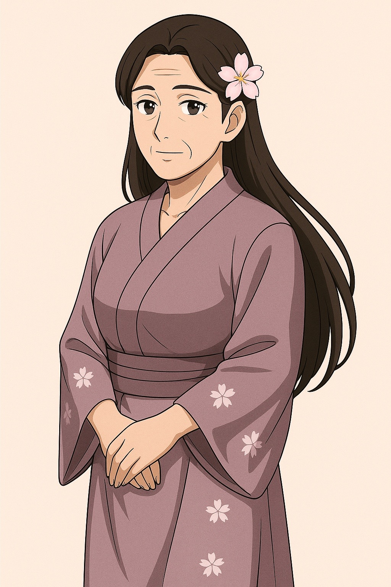

Emiko Knight

Name & Alias: Emiko Knight – The Quiet Blossom
Age / Race / Role: 38 / Human / Strategic Support, Maternal Healer
Appearance: Gentle, soft-spoken woman with long black hair in a floral braid, wearing flowing robes with cherry-blossom motifs.
Affinities & Energy Types: Wind, Chi, Emotional Energy
Threat Tier: A-Rank
Core Stats (0–10):
• Power: 5
• Speed: 6
• Technique: 8
• Intelligence: 9
• Defense: 7
• Aura Control: 9
Signature Abilities:
• Petal Soothing Aura
• Chi Restoration Bloom
• Wind Whisper Guidance
• Harmonic Resolve
• Heartstream Field
Personality Summary: Soft-spoken yet wise. Emiko is a deeply intuitive guide who nurtures others with compassion and clarity.
Faction or Allegiances: Knight Family